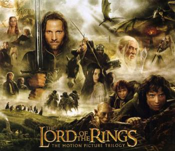

Tudo sobre O Senhor dos Aneis
O Senhor dos Anéis (The Lord of the Rings, no original) é um livro de alta fantasia, escrito pelo escritor britânico J. R. R. Tolkien. Escrita entre 1937 e 1949, com muitas partes criadas durante a Segunda Guerra Mundial,[1] a saga é uma continuação de O Hobbit (1937). Embora Tolkien tenha planejado realizá-la em volume único, a obra foi originalmente publicada em três volumes (The Fellowship of the Ring, The Two Towers e The Return of the King) entre 1954 e 1955, com cada volume contendo dois livros cada, e foi assim, em três volumes, que se tornou popular. Desde então, a obra foi reimpressa várias vezes e traduzida para mais de 40 línguas, vendendo mais de 160 milhões de cópias,[2] tornando-se um dos trabalhos mais populares da literatura do século XX.
Impacto na cultura popular
O Senhor dos Anéis: promoveu uma grande mudança na cultura popular, desde os anos 1950, quando foi publicado, mas principalmente nos anos 1960 e 70. Pode-se encontrar tal influência em exemplos como jogos de tabuleiro baseados no livro e em paródias como Bored of the Rings (no Brasil, O Fedor dos Anéis), o episódio de South Park, O Retorno do Senhor dos Anéis às Duas Torres, e o musical da Revista Mad nomeado O Anel e Eu. Graças ao trabalho de Peter Jackson, muita dessa influência voltou a ser sentida hoje.
No cinema
As adaptações para a tela incluem uma animação em 1978, quando Ralph Bakshi produziu a primeira versão em desenho animado sobre o Senhor dos Anéis. A produção não foi um sucesso. Seguindo o enredo de A Sociedade do Anel e de As Duas Torres, devia ser dividido em duas partes. O desenho tinha muitos cortes e a qualidade da animação não era muito boa, mas serviu como uma alavanca para uma maior abrangência dos livros. Porém, mesmo e principalmente entre os fãs, nunca houve grande aceitação sobre essa animação. A outra parte, O Retorno do Rei, em 1980, foi um especial animado para a TV por Rankin-Bass, que tinha produzido uma versão similar a O Hobbit em 1977.
